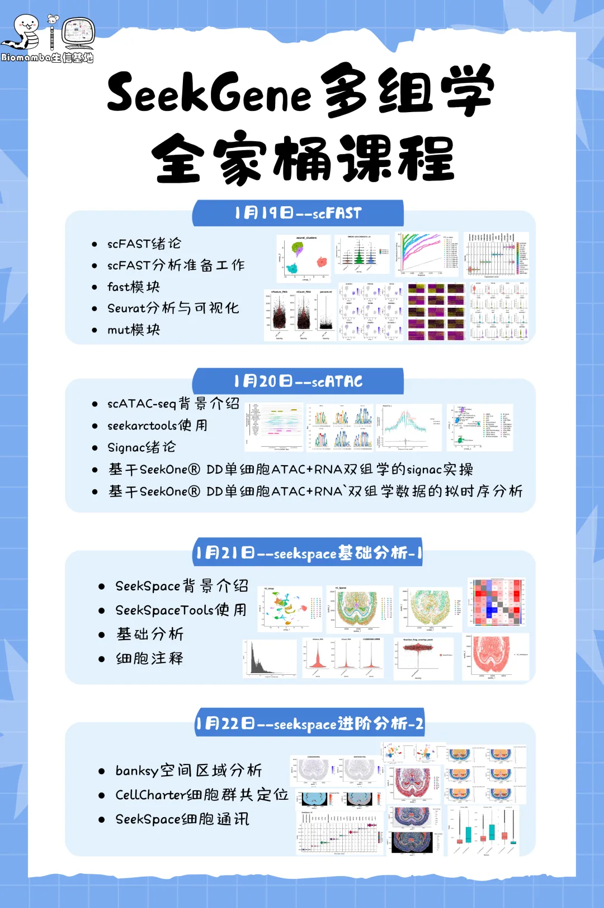
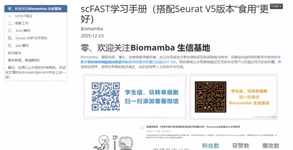
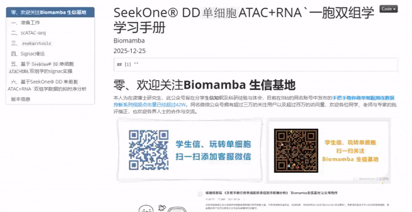
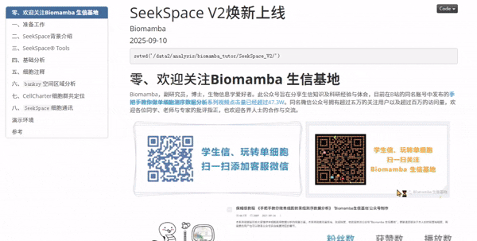
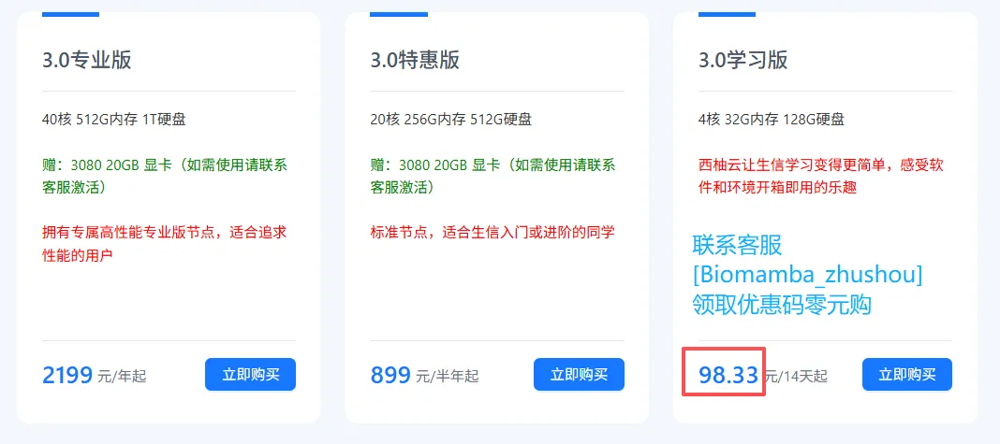
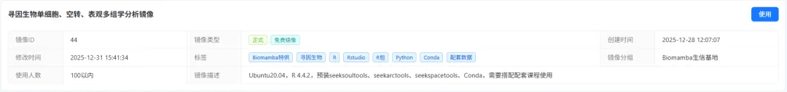

免费课程+学习手册|SeekGene单细胞/空间组学全家桶，属于你的“进阶通关包”
原文：https://mp.weixin.qq.com/s?__biz=MzAwMzIzOTk5OQ==&mid=2247534131&idx=1&sn=aa585b4d5da19d5563845acc5c624d3b&chksm=9b3c3f63ac4bb67551b46ff0b1e061b7f8a605fdb2162e4b140d011d74511e3c879d38b6ea82#rd 合集：生信基地

写在前面


为了让大家一站式获取完整学习体系，我们编撰了《SeekGene 单细胞 / 空间组学分析手册全家桶》学习手册，包含scFAST、scATAC、SeekSpace组学分析全流程，供各位按需学习；同时，我们还给大家搭建了专属学习交流群，方便大家随时交流疑问、分享经验，抱团攻克组学分析难题！下周我们也将开展在线直播教学，欢迎加群大家参加！二维码过期请联系微信[Biomamba_zhushou]
直播预约：

如果需要 单细胞数据分析教学、生信热点全文复现、自测数据个性化分析辅导、常态化实验学习，欢迎联系客服微信[Biomamba_zhushou]。

活动通知
2026，生信基地再启新程！免费编程课+实操直播课（2026年1月19日-22日）连续四天手把手全程教学，助你一站式学习scFAST单细胞、SeekSpace空间转录组、scATAC染色质可及性！配套免费西柚云服务器镜像，助力大家轻松上手实操！
免费镜像：学习版服务器(4线程、32GB内存)，包含此次三个组学分析的环境、工具、全部数据。注册地址：https://biomamba.xiyoucloud.net/
编程课程：Linux、R语言、Python课程视频预热学习，课后练习题作为配套打卡，学习时间：1月12日-1月25日。
报名费用：免费！免费！免费！
报名方式：联系客服微信[Biomamba_zhushou]

活动时间：2026年1月12日-25日
直播时间：2026年1月19日-22日
你需要准备：一台能打开浏览器、能上网的电脑
参与方式：线上腾讯会议、B站、视频号同步直播~
直播课程资料下载：https://pan.baidu.com/s/1XESKhoh4cn6Ap04wNWuLwQ
提取码：联系客服[Biomamba_zhushou]领取并添加学习群
SeekGene全家桶课程
1、scFAST——单细胞全长转录组

一、scFAST绪论1.1 写在前面1.2 主要结果 1.2.1 建库流程与特征 1.2.2 scFAST-seq与3'策略的scRNA-seq一致性评价1.3 小结二、准备工作2.1 SeekSoul®Tools 2.1.1 简介 2.1.2 模块组成 2.1.3 软件优势2.2 预备知识2.3 依赖工具下载 2.3.1 conda与mamba 2.3.2 gffread 2.3.3 annovar安装及库文件下载 2.3.4 fastp下载安装2.4 SeekSoul®Tools下载与安装 2.4.1 scFast板块 2.4.2 mut板块2.5 参考基因组下载及索引构建 2.5.1 GRCh38 2.5.2 hg38 2.5.3 rRNA基因组索引 2.5.4 小鼠mm10基因组三、fast模块3.1 rna及fast模块算法及流程说明3.2 fast模块使用 3.2.1 模块基本参数 3.2.2 fast模块使用实战3.3 报错记录 3.3.1 cutadapt 3.3.2 rnaseq_qc_results.txt文件没有？3.4 输出四、Seurat分析与可视化4.1 数据读取4.2 数据预处理4.3 降维、分群、注释五、mut模块5.1 简介5.2 模块工作流程5.3 运行mut模块 5.3.1 输入文件准备 5.3.2 运行mut模块 5.3.3 输出结果 5.3.4 Seurat再处理及可视化2、scATAC——单细胞染色质可及性

一、准备工作二、scATAC-seq2.1 染色质可及性2.2 scATAC-seq文库构建2.3 scATAC-seq的多组学联合2.4 scATAC-seq分析三、seekarctools3.1 软件下载3.2 软件安装3.3 软件分析逻辑 3.3.1 scRNA-seq定量3.4 参数介绍3.5 常见用法3.6 参数调整四、Signac绪论4.1 PBMC演示数据4.2 评估scATAC中的降维方法4.3 DNA 可及性和线粒体基因型的联合分析4.4 scATAC分析的扩展4.5 讨论五、基于SeekOne® DD单细胞ATAC+RNA双组学的signac实操5.1 signac基本流程 5.1.1 数据读取 5.1.2 基因信息注释 5.1.3 质量控制 5.1.4 peaks矩阵的标准化与降维分群 5.1.5 基因活性矩阵处理 5.1.6 与单细胞数据整合 5.1.7 差异可及性peaks计算 5.1.8 展示特定基因组区域的peaks5.2 与scRNA的联合分析 5.2.1 数据载入 5.2.2 添加ATAC注释 5.2.3 质量控制 5.2.4 scRNA矩阵处理 5.2.5 scATAC矩阵处理 5.2.6 细胞类型注释 5.2.7 UMAP可视化5.3 常见可视化 5.3.1 数据载入 5.3.2 基因注释 5.3.4 peaks可视化 5.3.5 LinkPlot 5.3.6 TilePlot 5.3.7 表达量绘制 5.3.8 拼图 5.3.9 一步可视化5.4 motif分析 5.4.1 motif过表达及差异分析 5.4.2 转录因子足迹5.5 共可及性网络构建 5.5.1 载入数据 5.5.2 构建Cicero对象 5.5.3 Cicero连接性计算 5.5.4 顺式可及性网络构建六、基于SeekOne® DD单细胞ATAC+RNA`双组学数据的拟时序分析6.1 ATAC拟时序 6.1.1 创建cell_data_set 6.1.2 拟时序分析6.2 RNA拟时序 6.2.1 创建cell_data_set 6.2.2 拟时序分析3、SeekSpace——单细胞空间转录组

一、准备工作1.1 编程基础1.2 硬件基础二、SeekSpace背景介绍2.1 介绍2.2 版本换新2.3 本文资料下载三、SeekSpace® Tools3.1 软件下载3.2 软件安装3.3 安装激活3.4 测序数据与参与基因组下载3.5 命令选项参数介绍3.6 V1版本demo数据定量3.7 V2版本nao_CS数据定量3.8 结果文件说明四、基础分析4.1 文件说明4.2 读入数据并创建对象4.3 添加空间坐标4.4 预处理与聚类五、细胞注释5.1 参考数据集5.2 Transferlabel细胞注释5.3 展示marker5.4 图像的重对齐5.5 添加DAPI与H&E图像5.6 空间中展示marker5.7 两组数据对比六、banksy空间区域分析6.1 banksy介绍6.2 banksy实操七、CellCharter细胞群共定位7.1 CellCharter介绍7.2 CellCharter安装八、SeekSpace细胞通讯 8.1 CellChat8.2 加载数据和构建CellChat对象8.3 加载配受体数据库8.4 表达数据预处理8.5 细胞通讯网络推断8.6 可视化8.7 交互式操作Biomamba生信基地还可以提供
若以上内容学习还不能满足你的科研需求，那可以考虑外卖的三大 全程班：Python版单细胞数据分析、R语言单细胞小白全程班、Python 空间转录组全程班，从零基础到实战手把手系统带教，内容详实且有老师答疑解惑。此外，我们还提供生信热点全文复现、自测数据个性化分析辅导、常态化实验学习等增值服务，欢迎联系客服微信 [Biomamba_zhushou] 。
本次课程镜像
1、镜像获取：
西柚云官网注册( https://biomamba.xiyoucloud.net/)、联系客服微信[Biomamba_zhushou]获取学习版服务器的优惠码、零元下单学习版服务器。

激活服务器实例后使用对应镜像，镜像中布置了R 4.4.2，预装seeksoultools、seekarctools、seekspacetools、Conda等本教程所需环境与工具，可以开箱即用的配合此次课程。
** **
2、镜像中共包含约73GB的测试数据与学习手册：
/data
├── SeekSpaceV2
│ ├── SeekSpace_V2焕新上线.html
│ ├── SeekSpace_V2焕新上线.rmd
│ ├── image
│ │ ├── Banksy_Fig1.png
│ │ ├── Banksy_Fig2.png
│ │ ├── Banksy_Fig3.png
│ │ ├── Banksy_Fig4.png
│ │ ├── Banksy_Fig5.png
│ │ ├── Rmarkdown开头2025.jpg
│ │ ├── V1_V2数据质量对比1.png
│ │ ├── V1_V2数据质量对比2.png
│ │ ├── V1_V2数据质量对比3.png
│ │ ├── cellchat交互1.png
│ │ ├── cellchat交互2.png
│ │ ├── cellchat交互3.png
│ │ ├── cellchat交互4.png
│ │ ├── space1.jpg
│ │ ├── space2.jpg
│ │ ├── space3.jpg
│ │ ├── 图像对齐前细胞数目.png
│ │ ├── 图像对齐后细胞数目.png
│ │ ├── 对齐页面.png
│ │ ├── 报告文件.png
│ │ ├── 环境激活.png
│ │ └── 过滤参考.png
│ ├── mouse_brain_ref.rds
│ ├── output
│ │ ├── CellCharter
│ │ ├── cellchat.RData
│ │ ├── marker_list.RData
│ │ ├── nao_CS
│ │ ├── nao_CS_realign
│ │ ├── obanksy
│ │ ├── seek_list.RData
│ │ └── seurat_mindmap.html
│ └── v2_count.sh
├── scFast
│ ├── data
│ │ ├── cellline_test
│ │ └── filtered_feature_bc_matrix
│ ├── img
│ │ ├── Rmarkdown开头2025.jpg
│ │ ├── cutadapt修改前.png
│ │ ├── cutadapt修改后.png
│ │ ├── fig1.png
│ │ ├── fig10.png
│ │ ├── fig11.png
│ │ ├── fig2.png
│ │ ├── fig3.png
│ │ ├── fig4.png
│ │ ├── fig5.png
│ │ ├── fig6.png
│ │ ├── fig7.png
│ │ ├── fig8.png
│ │ ├── fig9.png
│ │ ├── mut修改前.png
│ │ ├── mut修改后.png
│ │ ├── seeksoultools命令总览.png
│ │ ├── step6修改前.png
│ │ └── step6修改后.png
│ ├── result
│ │ ├── cell_line_mutout_new
│ │ ├── cellline_R1_001.clean.fastq.gz
│ │ ├── cellline_R2_001.clean.fastq.gz
│ │ ├── cellline_out
│ │ ├── scFAST.rds
│ │ └── scFAST_ann.rds
│ ├── scFast.Rmd
│ └── scFast.html
└── seekone
├── SeekOne DD单细胞ATAC+RNA一胞双组学_学习手册.rmd
├── SeekOne-DD单细胞ATAC+RNA一胞双组学_学习手册.html
├── WTHT084_output
│ ├── analysis
│ └── outs
├── data
│ ├── demo_clean_data.tar.gz
│ └── pbmc_multimodal.rds
├── img
│ ├── Figure 2.jpg
│ ├── Figure 4.jpg
│ ├── Figure 5.jpg
│ ├── PRJNA660027.jpg
│ ├── Rmarkdown开头2023.09.png
│ ├── Rmarkdown开头2025.jpg
│ ├── UMI矫正示意图.jpg
│ ├── ascp project.jpg
│ ├── black_list.jpg
│ ├── ebi_download.jpg
│ ├── environment.jpg
│ ├── fastq_name.jpg
│ ├── merge_strategy.jpg
│ ├── scATAC_library.jpg
│ ├── signac Figure 2.jpg
│ ├── signac Figure 3.jpg
│ ├── signac Figure 4.jpg
│ ├── signac Figure S1.jpg
│ ├── signac Figure S2.jpg
│ ├── signac Figure S4.jpg
│ ├── signac Figure S6.jpg
│ ├── 版本号.jpg
│ └── 转录组文库结构.jpg
├── refdata-arc-GRCh38.tar.gz
├── result
│ ├── DepthCor.pdf
│ ├── FeaturePlot_T_Cell.pdf
│ ├── atac
│ ├── clusters.pdf
│ ├── multi
│ ├── raw_atac_FragmentHistogram.pdf
│ ├── raw_atac_NucleosomeSignal.pdf
│ ├── raw_atac_TSS_DensityScatter.pdf
│ ├── raw_atac_TSS_enrichment.pdf
│ ├── raw_atac_blacklist_ratio.pdf
│ ├── raw_atac_fraction_frag_overlap_peak.pdf
│ ├── raw_atac_nCounts_peaks.pdf
│ └── rna
└── software
├── annotation
├── bin
├── cmake
├── compiler_compat
├── conda-meta
├── etc
├── fonts
├── include
├── lib
├── libexec
├── man
├── sbin
├── seekarctools_v1.1.0.tar.gz
├── share
├── ssl
├── var
└── x86_64-conda-linux-gnu
42 directories, 94 files

如何联系我们

 留一个领取资料、开箱即用的单细胞分析镜像的微信号[Biomamba_zhushou]，方便各位随时交流。同时我们也构建了交流群矩阵，欢迎大家入群讨论。
大家可以阅读完这几篇之后添加给生信入门初学者的小贴士
没有检索，就没有发言权
留一个领取资料、开箱即用的单细胞分析镜像的微信号[Biomamba_zhushou]，方便各位随时交流。同时我们也构建了交流群矩阵，欢迎大家入群讨论。
大家可以阅读完这几篇之后添加给生信入门初学者的小贴士
没有检索，就没有发言权
已有生信基地联系方式的同学无需重复添加

 您点的每个赞和在看，我都认真当成了喜欢
您点的每个赞和在看，我都认真当成了喜欢